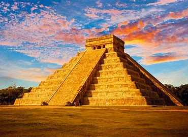
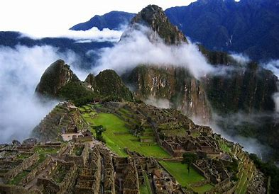
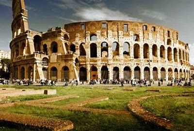

In 2000 a Swiss foundation launched a campaign to determine the New Seven Wonders of the World. Given that the original Seven Wonders list was compiled in the 2nd century BCE—and that only one entrant is still standing (the Pyramids of Giza)—it seemed time for an update. And people around the world apparently agreed, as more than 100 million votes were cast on the Internet or by text messaging. The final results, which were announced in 2007, were met with cheers as well as some jeers—a number of prominent contenders, such as Athens’s Acropolis, failed to make the cut. Do you agree with the new list?
Great might be an understatement. One of the world’s largest building-construction projects, the Great Wall of China is widely thought to be about 5,500 miles (8,850 km) long; a disputed Chinese study, however, claims the length is 13,170 miles (21,200 km). Work began in the 7th century BCE and continued for two millennia. Although called a “wall,” the structure actually features two parallel walls for lengthy stretches. In addition, watchtowers and barracks dot the bulwark. One not-so-great thing about the wall, however, was its effectiveness. Although it was built to prevent invasions and raids, the wall largely failed to provide actual security. Instead, scholars have noted that it served more as “political propaganda.”
Chichén Itzá is a Mayan city on the Yucatán Peninsula in Mexico, which flourished in the 9th and 10th centuries CE. Under the Mayan tribe Itzá—who were strongly influenced by the Toltecs—a number of important monuments and temples were built. Among the most notable is the stepped pyramid El Castillo (“The Castle”), which rises 79 feet (24 meters) above the Main Plaza. A testament to the Mayans’ astronomical abilities, the structure features a total of 365 steps, the number of days in the solar year. During the spring and autumnal equinoxes, the setting sun casts shadows on the pyramid that give the appearance of a serpent slithering down the north stairway; at the base is a stone snake head. Life there was not all work and science, however. Chichén Itzá is home to the largest tlachtli (a type of sporting field) in the Americas. On that field the residents played a ritual ball game popular throughout pre-Columbian Mesoamerica.
The ancient city of Petra, Jordan, is located in a remote valley, nestled among sandstone mountains and cliffs. It was purported to be one of the places where Moses struck a rock and water gushed forth. Later the Nabataeans, an Arab tribe, made it their capital, and during this time it flourished, becoming an important trade center, especially for spices. Noted carvers, the Nabataeans chiseled dwellings, temples, and tombs into the sandstone, which changed color with the shifting sun. In addition, they constructed a water system that allowed for lush gardens and farming. At its height, Petra reportedly had a population of 30,000. The city began to decline, however, as trade routes shifted. A major earthquake in 363 CE caused more difficulty, and after another tremor hit in 551, Petra was gradually abandoned. Although rediscovered in 1912, it was largely ignored by archaeologists until the late 20th century, and many questions remain about the city.
This Incan site near Cuzco, Peru, was “discovered” in 1911 by Hiram Bingham, who believed it was Vilcabamba, a secret Incan stronghold used during the 16th-century rebellion against Spanish rule. Although that claim was later disproved, the purpose of Machu Picchu has confounded scholars. Bingham believed it was home to the “Virgins of the Sun,” women who lived in convents under a vow of chastity. Others think that it was likely a pilgrimage site, while some believe it was a royal retreat. (One thing it apparently should not be is the site of a beer commercial. In 2000 a crane being used for such an ad fell and cracked a monument.) What is known is that Machu Picchu is one of the few major pre-Columbian ruins found nearly intact. Despite its relative isolation high in the Andes Mountains, it features agricultural terraces, plazas, residential areas, and temples.
Christ the Redeemer, a colossal statue of Jesus, stands atop Mount Corcovado in Rio de Janeiro. Its origins date to just after World War I, when some Brazilians feared a “tide of godlessness.” They proposed a statue, which was ultimately designed by Heitor da Silva Costa, Carlos Oswald, and Paul Landowski. Construction began in 1926 and was completed five years later. The resulting monument stands 98 feet (30 meters) tall—not including its base, which is about 26 feet (8 meters) high—and its outstretched arms span 92 feet (28 meters). It is the largest Art Deco sculpture in the world. Christ the Redeemer is made of reinforced concrete and is covered in approximately six million tiles. Somewhat disconcertingly, the statue has often been struck by lightning, and in 2014 the tip of Jesus’s right thumb was damaged during a storm.
The Colosseum in Rome was built in the first century by order of the Emperor Vespasian. A feat of engineering, the amphitheater measures 620 by 513 feet (189 by 156 meters) and features a complex system of vaults. It was capable of holding 50,000 spectators, who watched a variety of events. Perhaps most notable were gladiator fights, though men battling animals was also common. In addition, water was sometimes pumped into the Colosseum for mock naval engagements. However, the belief that Christians were martyred there—namely, by being thrown to lions—is debated. According to some estimates, about 500,000 people died in the Colosseum. Additionally, so many animals were captured and then killed there that certain species reportedly became extinct.
This mausoleum complex in Agra, India, is regarded as one of the world’s most iconic monuments and is perhaps the finest example of Mughal architecture. It was built by Emperor Shah Jahān (reigned 1628–58) to honor his wife Mumtāz Maḥal (“Chosen One of the Palace”), who died in 1631 giving birth to their 14th child. It took about 22 years and 20,000 workers to construct the complex, which includes an immense garden with a reflecting pool. The mausoleum is made of white marble that features semiprecious stones in geometric and floral patterns. Its majestic central dome is surrounded by four smaller domes. According to some reports, Shah Jahān wished to have his own mausoleum made out of black marble. However, he was deposed by one of his sons before any work began.